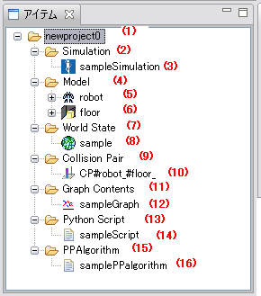

|
Item View
Here we explain the various elements that compose Item View.

- Project holder
Each item which has managed a setup of a simulation is saved.
Create, load and save operations can be done by right click menu.
To change the project name, right click and
select "Save Project As..." option and save the project in another name.
A project is saved in xml form.
- Simulation holder
Simulation items are saved.
Create and clear all items operations can be done by right click menu.
Although the Simulation holder can contain multiple Simulation items, only one is active at a time.
- Simulation item
It is an item which manages time, the integration method, etc. of a simulation.
Restoration of a property, rename, and clear operations can be done by right click menu.
It can be edited using Simulation View.
If restoration of a property is performed, it can return to a setup saved in the project.
- Model holder
Model Items are saved.
Create, load and clear all items operations can be done by right click menu.
Model holder can contain multiple models.
The newly created model item can be edited using GrxUI.
- Model item（Robot）
It is the VRML file which described the model. A robot's display shows the model which can have a controller.
Rename, reload and change to an environment model operations can be done by right click menu.
- Model item（environment）
It is the VRML file which described the model. An environment's display shows the model which can't have a controller.
Rename, reload and change to an robot model operations can be done by right click menu.
- World State holder
World State Items are saved.
Create, load and clrear all items operations can be done by right click menu.
Although the World State holder can contain multiple World State items, only one is active at a time.
-
World State item
It is an item which manages the log of a simulation.
Load and save operations can be done by right click menu.
- Collision Pair holder
Collision Pair Items are saved.
Clear all items operations can be done by right click menu. Collision Pair holder can contain
multiple collision pair items and it can be edited in the Collision View.
-
Collision Pair item
It is an item which manages the combination of the model which performs collision calculation.
Rename and clear operations can be done by right click menu.
- Graph Contents holder
Graph Contents Items are saved.
Create and clear all items operations can be done by right click menu.
Although the Group Contents holder can contain multiple graph contents items, only one is active at a time.
-
Graph Contents item
It is an item which manages a graphical representation.
Rename and clear operations can be done by right click menu.
This item can be edited in the "Graph View".
- Python Script holder
Python Script Items are saved.
Create, load and clear all items operations can be done by right click menu.
Although the Python Script holder can contain multiple python script items, only one is active at a time.
-
Python Script item
It is a Python Script file.
Clear and save operations can be done by right click menu.
The active python script item can be edited in the "Text Editor View".
- PPAlgorithm holder
PPAlgorithm Items are saved.
Create and clear all items operations can be done by right click menu.
Although the PPAlgorithm holder can contain multiple PPAlgorithm items, only one is active at a time.
- PPAlgorithm item
It is an item which manages the Path Planning parameter.
Rename and clear operations can be done by right click menu.
PPAlgorithm item can be edited in the Property View.
-
Items can be swtched to enable/disable state, by double-click. Disabled items are displayed
surrounded by brackets as "(Item name)".
-
When an item is selected, its details are displayed in
"Property View"
|